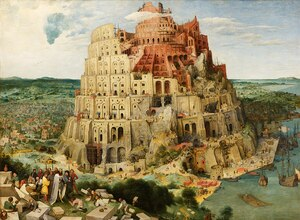

ⲙⲉϭⲧⲱⲗ & varr SB nn m, tower, cf מגדל: Is 5 2 ⲙⲉϭⲧ. (cit P 1318 98 ⲙⲉⲕⲇ., ShP 1302 95, P 44 58 ⲙⲉϭⲧ. برج, B = Gk) πύργος; Ryl 158 ⲛⲉⲙⲁ ⲛⲣⲟⲉⲓⲥ ⲛⲙⲓⲅⲇ. in vineyard (cf Fay Towns 154). In place-names: Ex 14 2 B ⲙⲉϣⲧ. مجدول (cf مشتول), Jer 26 14 S ⲙⲉϭⲧ. B do, Ez 29 10, 30 6 S ⲙⲉϫⲧ. B ⲙⲓϫⲧ. all Μάγδωλος; village near Shmûn S: BM 1031 ⲙⲓⲕⲧ., ib 1042, 1065 ⲙⲓⲅⲇ., Lant 42, Bodl(P) e 7 F ⲙⲓⲕⲧⲁⲁⲗ, Kr 53 F ? ⲙⲓⲧⲱⲗ (cf مطول), PMich 3553 S, Baouit 2 44 F ⲙⲓϫⲟⲗ. Cf Kr 63 F ⲡⲓⲡⲩⲣⲅⲟⲥ.
(noun masculine)
construction
tower [πυργος]

complete
207b
ⲙⲉϣⲧⲱⲗ B v ⲙⲉϭⲧⲱⲗ.
214b